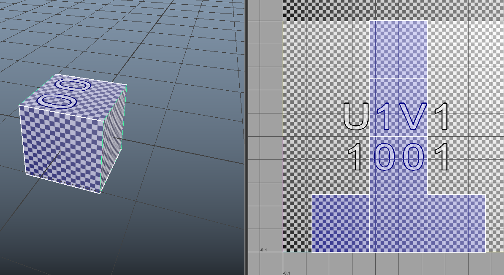

After doing the Unwrapping

Take a UV Snapshot
Make settings
Navigate to the saved image and open with photoshop
Do the texturing
Save it as psd
Assign the material(Lambert) and in color add the psd file
Finally use tiff for best performance